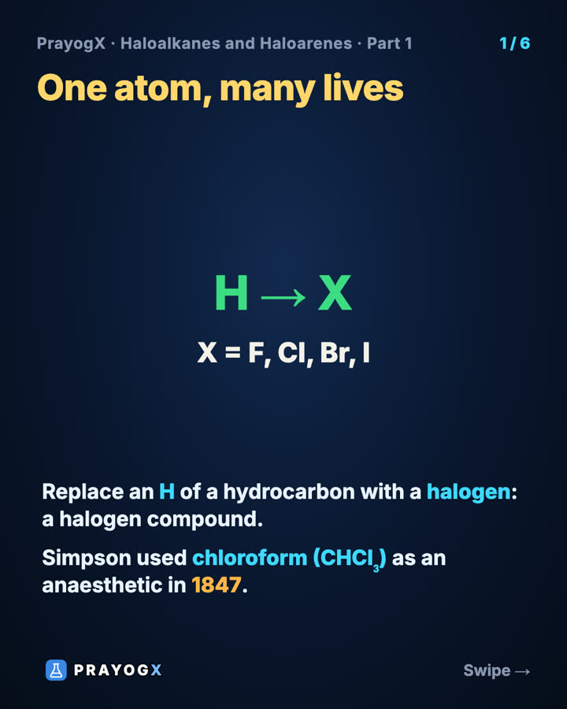
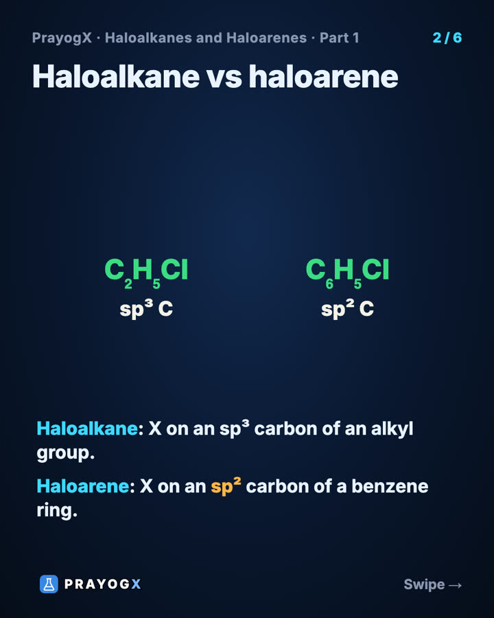
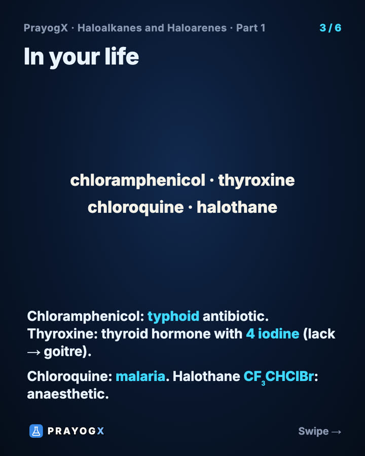
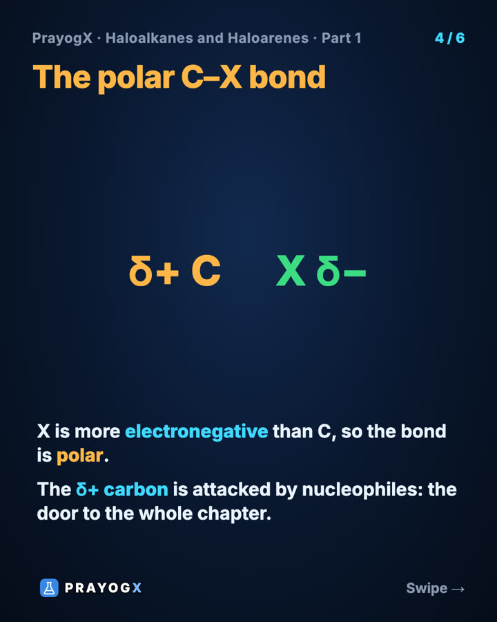
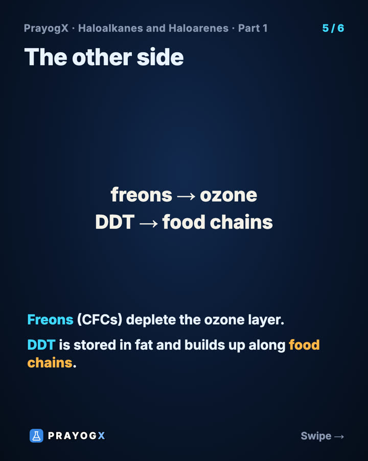
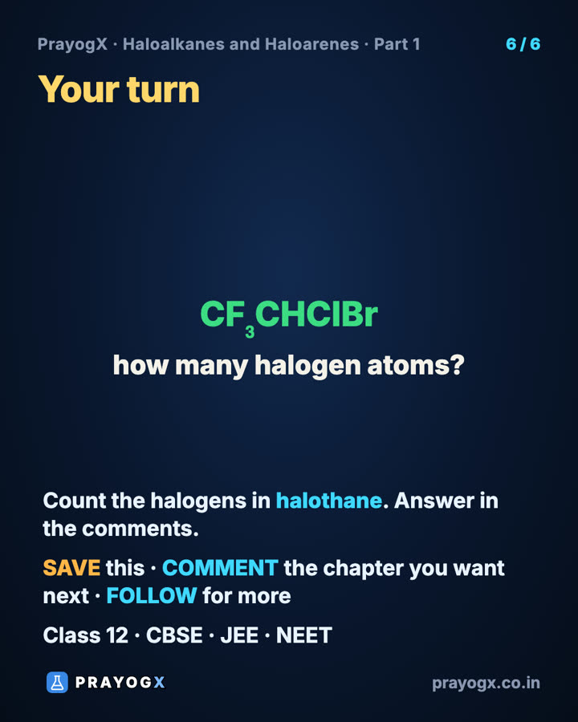

Chapter 6 · Chemistry
One Atom, Many Lives: Haloalkanes and Haloarenes
Video not playing? YouTube Short · YouTube (16:9)
In 1847 James Simpson found that chloroform, CHCl₃, could put people to sleep for surgery. Replace a hydrogen of a hydrocarbon with a halogen and you get a haloalkane (halogen on an sp³ alkyl carbon) or a haloarene (halogen on an sp² ring carbon). They are everywhere: chloramphenicol for typhoid, thyroxine with four iodine atoms, chloroquine for malaria, halothane for anaesthesia. The polar C–X bond, with a δ+ carbon, is why they react, and it opens the whole chapter.
Download the short notesPDF, 206 KB · solved examples, practice set and answer key Download the memory cards
PDF, 828 KB · 6 cards: the whole topic at a glance, for quick revision Download the workbook
PDF, 193 KB · fill in the blanks, true/false, assertion-reason, MCQ, numericals, short answer, match the columns; detailed solutions at the end That's all the videos in this chapter so far Back to Haloalkanes and Haloarenes
Key points
- Definition: replace an H of a hydrocarbon by a halogen X: a haloalkane (X on an sp³ alkyl carbon) or a haloarene (X on an sp² ring carbon).
- Chloroform (CHCl₃): methane with three H replaced by Cl; Simpson's anaesthetic, Edinburgh 1847.
- In medicine and the body: chloramphenicol (typhoid), thyroxine (4 iodine; lack of iodine → goitre), chloroquine (malaria), halothane CF₃CHClBr (anaesthetic).
- Polar C–X bond: X is more electronegative, so carbon is δ+ and is attacked by nucleophiles.
- Bond strength falls C–F > C–Cl > C–Br > C–I, so C–I breaks most easily.
- The other side: freons deplete the ozone layer; DDT builds up along food chains.
Haloalkane or haloarene?
| Haloalkane (alkyl halide) | Haloarene (aryl halide) | |
|---|---|---|
| Halogen attached to | an alkyl carbon | a benzene-ring carbon |
| Hybridisation of that carbon | sp³ | sp² |
| Example | C₂H₅Cl (chloroethane) | C₆H₅Cl (chlorobenzene) |
Memory cards
Swipe through the 6 cards to revise this topic in a minute.






PDF, 828 KB · 6 cards: the whole topic at a glance, for quick revision
Quick quiz
10 questions. Choose an answer for each, then submit to see your score and the explanations.